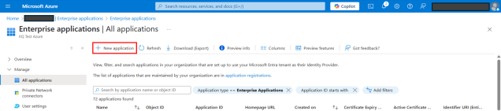
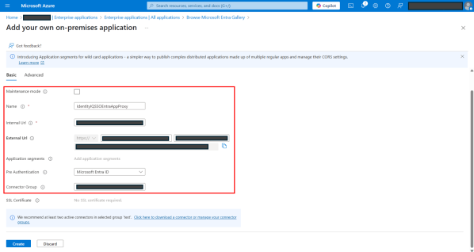
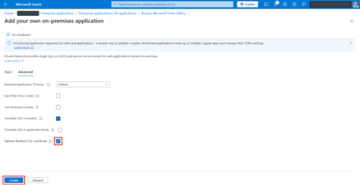
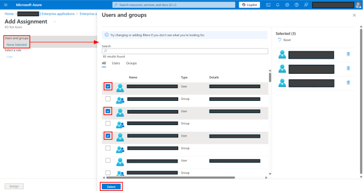
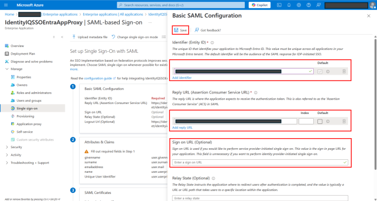
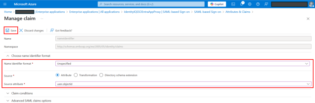
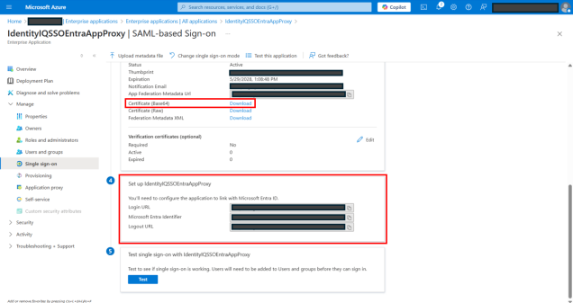

Creating an SSO Entra Application Proxy in Azure
Azure Entra Application Proxy is a cloud-based service that enables secure remote access to IdentityIQ within the Microsoft Teams application. It allows assigned users and groups to access IdentityIQ from anywhere – without the need of virtual private network (VPN), ensuring a seamless and secure experience.
Note: It is essential to follow the specified sequence of steps as mentioned in the document when creating the necessary applications for integrating IdentityIQ with Microsoft Teams. For a visual guide to the recommended setup order, refer to Best Practices for Configuring IdentityIQ Microsoft Teams.
Important: This guide ONLY provides instructions for configuring specific Azure component configurations required to support IdentityIQ’s Notifications and Access Request Approval work item features in Microsoft Teams. It is intended as an aid to implementers but should be used in conjunction with Microsoft’s official documentation to ensure access to the most accurate and up-to-date information. For broader information on Azure or general setup tasks related to Microsoft Teams and SSO, please refer to Microsoft's official documentation.
Creating Entra Application Proxy in Azure
To register an Entra Application Proxy, perform the following steps:
-
Under Manage > Enterprise applications, select + New application.

-
On the Microsoft Entra Gallery page, select Add on-premises application.
-
On the Add application page, provide the following details:
-
Under Basic tab:

-
Maintenance mode – Keep it unselected. This is the maintenance page that users see during maintenance and downtime events.
-
Name – Provide a meaningful name for the application. See Best Practices for Configuring IdentityIQ Microsoft Teams to define an appropriate application name.
-
Internal Url – This is the IdentityIQ URL the proxy will forward traffic to. The URL should include the VM name, port, context, and <My Approvals> tab of your IdentityIQ application. For example: https://<VM NAME>:<port>/identityiq/ui/.
-
External Url – An auto-generated external URL with application name options as input. The URL can be customized. For example: https://<APP_NAME>.msproxy.net/identityiq/ui/.
Note: External URL only exposes IdentityIQ Approvals page to users accessing from the Microsoft Teams application (native app or web). Users cannot access any other pages using this URL, ensuring secure access.
-
Pre Authentication – Attribute for pre authentication. By default, Microsoft Entra ID is selected. Keep the default selection.
-
Connector Group –- Select your connector group appropriate for your IdentityIQ VM from the dropdown.
-
-
Under Advance tab on the Application Proxy page, ensure that Validate Backend SSL certificate checkbox is selected by default. But unselect the checkbox if the certificate for IdentityIQ application server is expired, self-generated, or otherwise invalid.

-
Select Create.
-
Select Create.
-
Under Manage > Enterprise applications, search and open the newly created application proxy.
-
On Overview page, select Assign users and groups tile.
Alternatively, navigate to Manage > Users and groups and then select + New user/group.
-
On Add Assignment page, under Users and groups, select None Selected.

-
On the Users and groups dialog, provide the following details:
-
Select the users and groups that you want to be able to use SAML SSO.
-
Select the Select button.
-
-
Select Assign.
Configuring Single Sign-On for Entra Application Proxy
After creating an Entra Application Proxy and adding users and groups to it, you need to configure the Single sign-on (SSO) for the application.
-
In the left navigation panel, select Single sign-on.
-
Select the SAML tile.
-
On the Set up page, select Edit for Basic SAML Configuration.
-
In the dialog, provide the following details:

-
Add Identifier – Add the auto generated external URL during the application proxy creation. Ignore this step, if the URL is already added by default.
-
Add reply URL – Add the auto generated external URL during application proxy creation with suffix; /index.jsf?msTeamsAuthComplete=true. For example, https://SSOEntraProxy-test.msappproxy.net/identityiq/ui/index.jsf?msTeamsAuthComplete=true.
-
Under Sign on URL (Optional), add the auto generated external URL.
-
Do not add a URL for Relay State (Optional) and Logout URL (Optional).
-
Select Save.
-
-
On the Set up page select Edit for Attributes and Claims.
-
On the Attributes & Claims page, select Unique User Identifier (Name ID).
-
On the Manage claim page, provide the following details:

-
Select Unspecified for Name identifier format.
-
Select user.objectId for Source attribute.
-
Select Save.
-
-
On the Single sign on page, perform the following steps:

-
Download Certificate (Base64).
-
Save the certificate in your local drive and use it during IdentityIQ configuration in the next section.
-
Copy Login URL and Microsoft Entra Identifier URL to use it during application configuration to link with Microsoft Entra ID in the next section.
-
Now configure the Microsoft Teams SAML in the Debug page.
Configuring Microsoft Teams SAML in Debug Page
To update the Microsoft Teams SAML configuration in the debug page, perform the following steps:
-
Log in as an IdentityIQ administrator.
-
Navigate to the Debug page through the Debug URL: https://<hostname>/identityiq/debug.
-
Select Configuration object and then select System Configuration. The Object Editor will open, showing the configuration settings in XML format.
-
Search for "TeamsSAMLEnabled" key in the XML and set to TRUE in the following manner; <entry key="teamsSAMLEnabled" value="true"/>.
-
Select Save.
-
In the Filter by Name or ID search field, type 'TeamsSAML' and press ENTER. Select the TeamsSAML row to open the Object Editor.
-
Add IdentityNow attribute in TeamsSAML configuration.
-
Add below snippet into configuration tag.
Copy<Attributes>
<Map>
<entry key="IdentityNow">
<value>
<SAMLConfig assertionConsumerService="ENTRA-PROXY-URLindex.jsf" bindingMethod="urn:oasis:names:tc:SAML:2.0:bindings:HTTP-POST" entityId="ENTRA-PROXY-URL" idpServiceUrl="MICROSOFT-LOGIN-URL" issuer="MICROSOFT-ENTRA-IDENTIFIER" nameIdFormat="urn:oasis:names:tc:SAML:1.1:nameid-format:unspecified">
<IdpPublicKey>SAML-CERTIFICATE</IdpPublicKey>
<RuleRef>
<Reference class="sailpoint.object.Rule" id="RULE-ID" name="ExampleAzureActiveDirectoryUsingTenantIdSAML"/>
</RuleRef>
</SAMLConfig>
</value>
</entry>
</Map>
</Attributes> -
To add attribute IdentityNow in TeamsSAML configuration, you will need the following values:
-
ENTRA-PROXY-URL
-
MICROSOFT-LOGIN-URL
-
MICROSOFT-ENTRA-IDENTIFIER
-
SAML-CERTIFICATE Public Key (IdP - Identity Provider)
-
RULE-ID
-
-
The above values can be found as mentioned below:
-
ENTRA-PROXY-URL, MICROSOFT-LOGIN-URL, MICROSOFT-ENTRA-IDENTIFIER; navigate to Microsoft Entra ID > Enterprise Application in Azure, then open the Entra Application Proxy created earlier.
-
ENTRA-PROXY-URL = External URL
-
MICROSOFT-LOGIN-URL = Login URL
-
MICROSOFT-ENTRA-IDENTIFIER = Microsoft Entra Identifier
-
-
SAML-CERTIFICATE Public Key; use the public key from the SAML Certificate (Base64) downloaded during the configuration process.
-
RULE-ID; navigate to IdentityIQ > Debug > Rule > ExampleAzureActiveDirectoryUsingTenantIdSAML and copy the Id from that rule and use it as the RULE-ID in the configuration.
-
-
If the ENTRA-PROXY-URL already contains a trailing slash, as is typically the case, refrain from adding an additional slash. For example, if the Entra-Proxy-URL is https://abc/, then assertionConsumerService should be https://abc/index.jsf, without an additional slash before index.jsf.
If it doesn’t have a trailing slash, for example; https://abc, then add one slash before index.jsf, for example; https://abc/index.jsf.
Note: You may have already copied some of these values when setting up Single sign-on (SSO) for the Entra Application Proxy.
You now have successfully created an SSO Entra Application Proxy in Azure. For next step, refer Creating an API Access Application in Azure.